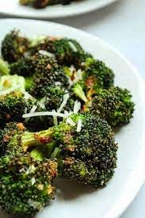

Roasted Broccoli
Ingredients
- 1 head of broccoli
- olive oil
- 1/2 teaspoon garlic powder
- 1/2 teaspoon paprika
- salt and pepper
- 1/4 cup parmesean cheese
Directions
- Preheat air fryer to 350°F for 5 minutes
- Cut head of broccoli into bite sized pieces
- Move broccoli into bowl. Add in garlic powder, paprika, salt, pepper, and parmesean cheese
- Set air fryer to 350°F and cook broccoli for 8 minutes
- Remove basket and flip broccoli. Cook for another 6 minutes at 350°F
- Remove broccoli from air fryer and place onto a plate. Enjoy!